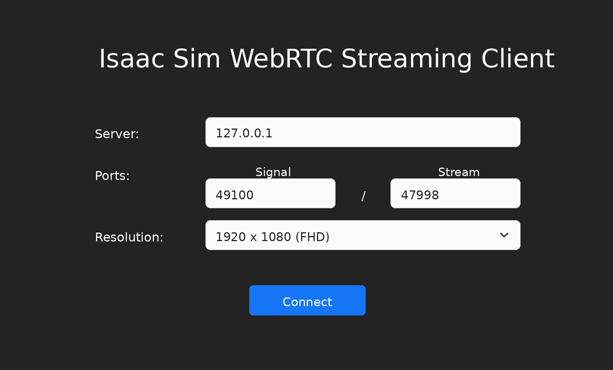
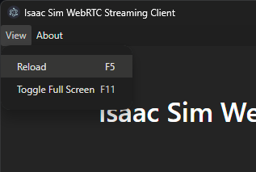

Livestream 客户端#
本节介绍如何对无头（headless）模式的 Isaac Sim 实例进行直播推流。
警告
Isaac Sim 直播推流（包括原生桌面客户端和基于 Web 的查看器）设计用于私有或受信任的网络。 推流端点不包含身份验证或加密功能。在没有额外安全措施（例如使用带有 HTTPS/TLS 和身份验证的反向代理，如配置了 SSL 证书和基本身份验证的 nginx）的情况下，切勿将其暴露在公共互联网上。 在云虚拟机上部署时，请使用防火墙规则将推流端口限制为仅允许您的客户端 IP 访问。 用户有责任确保任何面向公众的部署的安全性。
注意
每个 Isaac Sim 实例一次只能使用一种推流方式。
每个 Isaac Sim 实例一次只能有一个客户端访问。
要远程退出 Isaac Sim 应用：在推流的 Isaac Sim 应用中，单击 File 菜单，然后单击 Exit。接下来，关闭 Isaac Sim WebRTC Streaming Client 应用。
在 A100 GPU 上运行 Isaac Sim 时不支持直播推流。直播推流需要 NVENC（NVIDIA Encoder），而 A100 GPU 不包含 NVENC。
有关支持 NVENC 的 GPU，请参阅 Video Encode and Decode Support Matrix。
下载或使用 NVIDIA Isaac Sim WebRTC Streaming Client，即表示您同意 NVIDIA Isaac Sim WebRTC Streaming Client License Agreement。
客户端平台支持与 Isaac Sim 主机平台支持是分开的。请使用 Latest Release 部分中列出的下载项获取受支持的客户端软件包。
有两种方法可以连接到正在直播的 Isaac Sim 实例：
Isaac Sim WebRTC Streaming Client — 一款适用于 Windows、macOS 和 Linux 的原生桌面应用程序。 请从 Latest Release 部分下载。最适合本地或同一网络内的连接。
基于 Web 的查看器（Docker Compose） — 使用 Docker Compose 与 Isaac Sim 一起部署的基于浏览器的客户端。 可在任何基于 Chromium 的浏览器中运行，无需安装。推荐用于云和远程部署。请参阅下方的 Web-Based Streaming Client (Docker Compose)。
Isaac Sim WebRTC 流式客户端#
Isaac Sim WebRTC Streaming Client 是推荐的流式客户端，用于在桌面或工作站上远程查看 Isaac Sim，而无需强大的 GPU。
要使用 Isaac Sim WebRTC Streaming Client，请使用以下方法之一运行 Isaac Sim：
有关完整的安装说明，请参阅 Workstation Installation。
cd ~/isaacsim
./isaac-sim.streaming.sh
有关完整的安装说明，请参阅 Workstation Installation。
cd C:\isaacsim
isaac-sim.streaming.bat
有关完整的安装说明，请参阅 Container Installation。
cd /isaac-sim
./runheadless.sh
重要
必须使用 --network=host 启动容器，直播流才能正常工作。
Docker bridge 网络（-p 端口映射）无法与 WebRTC 配合使用，因为
容器的网络命名空间内无法访问主机 IP。
对于更简单的设置，建议使用 Docker Compose 进行容器化流式传输。它会自动处理卷挂载、GPU 分配、网络和运行状况检查。有关详细信息，请参阅下方的 Web-Based Streaming Client (Docker Compose) 或 Docker README。
有关完整的安装说明，请参阅 Python Environment Installation。
isaacsim isaacsim.exp.full.streaming --no-window
有关完整的安装说明，请参阅 Python Environment。
./python.sh standalone_examples/api/isaacsim.simulation_app/livestream.py
注意
运行 Isaac Sim 的计算机必须配备支持 NVENC 的 NVIDIA GPU 和兼容的 NVIDIA 驱动程序。在 Linux 主机上，使用
nvidia-smi确认 GPU 和驱动程序版本。在容器中，确认 NVIDIA Container Toolkit 通过ldconfig -p | grep libnvidia-encode暴露了编码库。若要通过互联网连接到远程实例并运行 Isaac Sim，请添加以下标志：
--/exts/omni.kit.livestream.app/primaryStream/publicIp=<PUBLIC_IP> --/exts/omni.kit.livestream.app/primaryStream/signalPort=49100 --/exts/omni.kit.livestream.app/primaryStream/streamPort=47998Docker 容器中的示例如下：
PUBLIC_IP=$(curl -s ifconfig.me) && ./runheadless.sh --/exts/omni.kit.livestream.app/primaryStream/publicIp=$PUBLIC_IP --/exts/omni.kit.livestream.app/primaryStream/signalPort=49100 --/exts/omni.kit.livestream.app/primaryStream/streamPort=47998
在 Isaac Sim WebRTC Streaming Client 应用中使用相同的公共 IP。
必须在运行 Isaac Sim 的主机上开放以下端口：
端口
协议
用途
49100TCP
WebRTC 信令
47998UDP
WebRTC 媒体流
8210TCP
Web 查看器（仅适用于 Docker Compose）
如果客户端显示黑屏或端口未监听，请首先确认 Isaac Sim 应用已达到加载完成状态。对于容器，请确认容器启动时使用了
--network=host。对于云主机或远程主机，请确认传递给 Isaac Sim 的公共 IP 与客户端使用的 IP 相同。防火墙必须同时允许 TCP49100和 UDP47998；仅开放 TCP 端口不足以支持 WebRTC 媒体流。
请确保 Isaac Sim 应用已加载并准备就绪。Isaac Sim 首次完全加载可能需要几分钟时间。
要确认这一点，请在终端/控制台输出或应用日志中查找以下消息。使用 PIP 或 Python Sample 运行时，此行可能不会出现。
Isaac Sim Full Streaming App is loaded.
从最新版本部分下载适用于您平台的 Isaac Sim WebRTC Streaming Client。
运行 Isaac Sim WebRTC Streaming Client 应用。

使用默认的 127.0.0.1 IP 地址作为服务器，以连接到本地运行的 Isaac Sim 实例。
点击 Connect。连接过程可能需要片刻时间。连接成功后，您应该会在客户端窗口中看到 Isaac Sim 界面。
注意
建议在 Isaac Sim 无头实例所在的同一网络中使用 Isaac Sim WebRTC Streaming Client。
要连接到同一网络中的 Isaac Sim 无头实例，请将 127.0.0.1 替换为运行 Isaac Sim 的机器的 IP 地址。
在 Linux 上：安装 Debian 软件包。
Debian 软件包（Ubuntu / Debian，集成菜单）：
sudo dpkg -i ./isaacsim-webrtc-streaming-client-*-linux-*.deb sudo apt -f install dpkg -l | grep isaacsim-webrtc-streaming-client
然后从应用程序菜单启动 Isaac Sim WebRTC Streaming Client，或在终端中运行
isaacsim-webrtc-streaming-client。该软件包不需要 FUSE 或 AppImage 运行时；它在 Ubuntu 22.04、 24.04 及更高版本上运行，除了标准桌面环境外，无需额外的系统库。
在 Ubuntu 24.04 或更高版本上，Electron 的沙箱需要非特权用户命名空间。 如果客户端因 SUID 沙箱错误而无法启动，请使用以下命令启用它们：
sudo sysctl -w kernel.unprivileged_userns_clone=1 sudo sysctl -w kernel.apparmor_restrict_unprivileged_userns=0
sysctl -w设置是临时的，重启后会重置。若要使其持久化，请将它们添加到/etc/sysctl.d/下的文件中：sudo tee /etc/sysctl.d/99-electron-sandbox.conf >/dev/null <<'EOF' kernel.unprivileged_userns_clone=1 kernel.apparmor_restrict_unprivileged_userns=0 EOF sudo sysctl --system
在 Windows 上：
如果您在连接到本地或远程 Isaac Sim 实例时遇到问题，请确保 /kit/kit.exe 和 Isaac Sim WebRTC Streaming Client 应用已添加到 Windows 防火墙的允许列表中。
在 Mac 上：
打开 DMG 文件，然后点击并将 Isaac Sim WebRTC Streaming Client 应用拖拽到 Applications 文件夹图标以进行安装。
在流式传输 Isaac Sim 应用时，在流式应用内分别使用
Ctrl+C和Ctrl+V进行复制和粘贴。若要从主机复制到客户端，请使用
⌘C和Ctrl+V。
要重新加载连接，请在 View 菜单中点击 Reload。如果一段时间后看到空白屏幕，此操作可能会有所帮助。

基于 Web 的流式客户端（Docker Compose）#
作为原生桌面客户端的替代方案，您可以使用通过 Docker Compose 与 Isaac Sim 一起部署的基于 Web 的 WebRTC 客户端，将 Isaac Sim 流式传输到任何基于 Chromium 的浏览器。
有关 Docker Compose 配置、多实例部署和环境变量的完整详细信息，请参阅 Docker README。
此方法无需下载或安装原生应用程序。Web 查看器基于 NVIDIA Omniverse Web SDK (@nvidia/create-ov-web-rtc-app) 构建，并通过 WebRTC 连接到 Isaac Sim。
注意
Docker Compose Web 查看器部署仅支持 Ubuntu 主机和 DGX Spark 系统。 不支持 Windows 主机（包括 WSL）。
快速入门：
# Create cache/log mounts (use uid 1234 to match container user)
mkdir -p ~/docker/isaac-sim/{cache/main,cache/computecache,cache/kit,config,data,logs,pkg}
mkdir -p ~/.cache/ov/hub
sudo chown -R 1234:1234 ~/docker ~/.cache/ov/hub
# Build the Isaac Sim image (skip if using a prebuilt NGC image)
./tools/docker/prep_docker_build.sh --build --x86_64
./tools/docker/build_docker.sh --x86_64
# Launch Isaac Sim + web viewer
docker compose -p isim -f tools/docker/docker-compose.yml up --build -d
# Check the web viewer URL
docker compose -p isim logs web-viewer
注意
在 DGX Spark 上，请在上述构建命令中使用 --aarch64 代替 --x86_64。
在基于 Chromium 的浏览器中打开日志中显示的 URL（例如 http://<host-ip>:8210）。
如果 Docker Compose 在上次测试后报告 Hub 启动或连接性问题，请从 Hub Workstation Cache 重启 Hub 容器，然后重试 Docker Compose。
若要使用预构建的 NGC 镜像而非本地构建：
ISAAC_SIM_IMAGE=nvcr.io/nvidia/isaac-sim:6.1.0 docker compose -p isim -f tools/docker/docker-compose.yml up --build -d
键盘快捷键：
操作 |
Windows / Linux |
Mac |
|---|---|---|
复制 / 粘贴 |
Ctrl+C / Ctrl+V |
Ctrl+C / Ctrl+V |
刷新浏览器页面 |
F5 或 Ctrl+R |
Fn+F5 或 Cmd+R |
在 Isaac Sim 中最大化视口 |
F7 |
Fn+F7 |
切换浏览器全屏模式 |
F11 |
Shift+Fn+F11 |
打开 DevTools |
F12 |
Fn+F12 或 Cmd+Option+I |
注意
浏览器 Clipboard API 需要安全上下文。当通过 HTTP 从非 localhost 地址访问 Web 查看器时，剪贴板转发到 Isaac Sim 的功能将被阻止。要在 Chrome 中启用此功能，请打开
chrome://flags/#unsafely-treat-insecure-origin-as-secure，添加 Web 查看器 URL（例如http://192.168.1.100:8210），然后重新启动 Chrome。Web 查看器支持多实例部署，包括专用 GPU、自定义端口等功能。有关完整的配置详细信息，请参阅 Docker README。